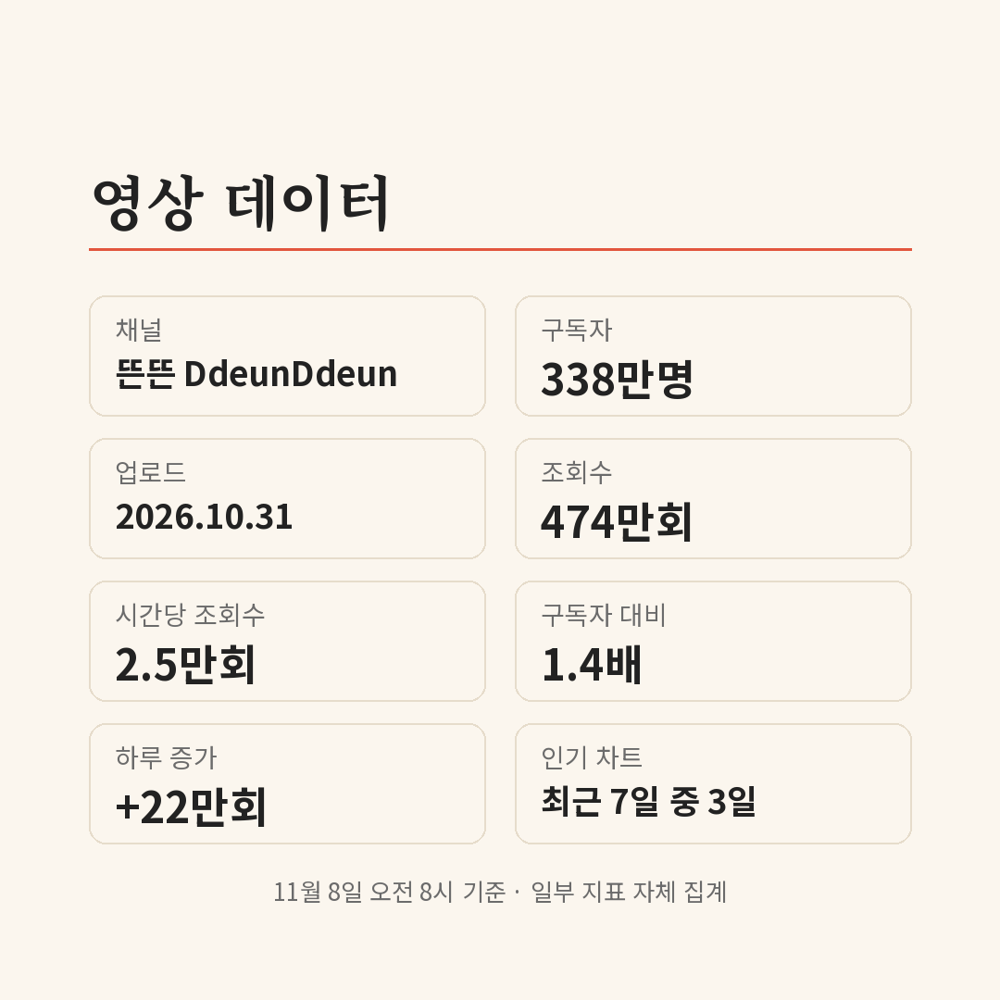

하루 사이 416만 회. 11월 8일 오전 8시 기준, 유재석 이름이 붙은 유튜브 영상들의 조회수가 전날보다 늘어난 양이에요(자체 집계). 그런데 그중 가장 크게 늘어난 영상은 '핑계고'가 아니라 KBS 채널의 '해피투게더' 쇼츠였어요.
📷 사진 1 자리
영상은 17편, 올라온 채널은 15곳이에요. 이 중 출처가 분명한 공식 채널 영상은 3편이라, 이 글은 그 3편을 중심으로 정리했어요.
474만 회, 핑계고 EP.123
가장 조회수가 많은 공식 영상은 웹예능 채널 '뜬뜬'의 '핑계고' EP.123 '풍향중 후일담'이에요. 10월 31일에 올라와 474만 회를 기록했어요. 구독자 338만 채널에서 구독자 수의 1.4배가 본 셈이고, 하루 사이에도 22만 회가 늘었어요.
인기 동영상 차트에는 최근 7일 중 3일 이름을 올렸어요(자체 집계). 출연자 태그는 유재석, 지석진, 이성민, 양세찬 네 명이에요.
▶ 영상 1 자리
여름의 '풍향중', 겨울 앞의 후일담
영상 설명에 따르면 네 사람은 여름에 '풍향중'이라는 이름으로 국도를 따라 여기저기를 다녔어요. 겨울을 앞두고 다시 모여 그때를 되짚었고, 이야기가 다음 풍향중으로까지 이어졌다고 적혀 있어요.
설명에는 '풍향중 오디션'을 슬쩍 준비했다는 말도 있어요. 결국 핑계고답게 주제와 상관없이 수다를 떨었다는 안내가 덧붙어 있고요.
하루 129만 회, 해피투게더 쇼츠
하루 증가량 1위는 esports KBS 채널의 쇼츠 '일반인은 믿기 힘든 강호동 실제 스케줄'이에요. 11월 4일에 올라와 423만 회, 하루에만 129만 회가 늘었어요. 설명 태그에는 해피투게더, 쿵쿵따, 유재석, 강호동이 함께 달려 있어요.
▶ 영상 2 자리
같은 채널이 11월 2일에 올린 '강호동 "넌 조회가 안 돼" 썰'도 209만 회예요. 하루 사이 35만 회가 늘었고, 차트에는 이틀 올랐어요.
▶ 영상 3 자리
링크할 수 없는 나머지 14편
나머지 14편은 다른 채널에 올라온 짧은 클립이에요. 숫자는 오히려 큰 편이에요. 유재석·이광수 태그가 달린 쇼츠 두 편은 구독자 1~2만 채널에서 566만 회, 539만 회를 넘겼어요.
다만 원본 방송사 채널이 아니라 재업로드일 수 있어서 이 글에는 넣지 않았어요. 토요일 '놀면 뭐하니?' 클립도 하루 만에 47만 회가 늘었어요.
숫자를 나란히 놓고 보니 긴 영상은 핑계고, 짧은 영상은 옛 예능 클립으로 갈려서 퍼지고 있었어요. 유재석 이름으로 묶였는데 하루 증가 1위 제목에는 강호동이 들어 있다는 점도 눈에 띄어요. 핑계고를 처음 본다면 후일담보다 여름의 풍향중 회차를 먼저 찾아보고 EP.123으로 넘어가는 순서를 권해요.
✍️ 직접 보거나 들은 경험이 있으면 위 문단에 한두 줄 덧붙이세요 (이 안내 줄은 지우기)
핑계고는 '뜬뜬' 채널에 요일을 정하지 않고 '불시 업로드'로 올라와요. 새 회차를 놓치지 않으려면 채널 알림을 켜 두는 게 가장 빨라요.
